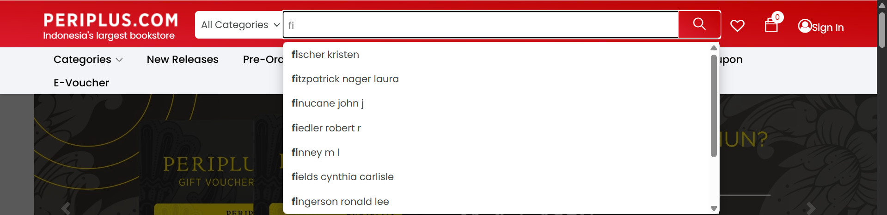
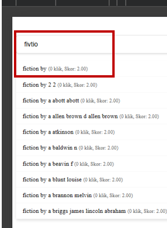

Politeknik Negeri Bandung
Bachelor of Applied Science in Informatics Engineering
Final Project: "Improving Search Suggestion Relevance in an Online Bookstore with Hybrid BM25-SBERT Re-ranking"
I am a fresh graduate in Informatics Engineering from Politeknik Negeri Bandung. I have a strong interest in backend Engineering, Software Engineer, Full-stack, and search systems. I have worked with OpenSearch, Spring Boot, and React through my internship and projects, and I like to test my work with real data. I enjoy working in a team and use AI tools to learn faster. I am eager to learn new things and keep improving myself.
Bachelor of Applied Science in Informatics Engineering
Final Project: "Improving Search Suggestion Relevance in an Online Bookstore with Hybrid BM25-SBERT Re-ranking"


During my internship, I worked on the search suggestion feature of the Periplus website. My goal was to help users find books faster, even when they type only part of a word or make small typos.
I designed the OpenSearch index and tried four query strategies: completion, search-as-you-type, phrase, and fuzzy. I also cleaned the search keywords and used click counts to rank results, so results that people click more often get a higher rank. To check my work, I built a small prototype with Python, Flask, and a simple web page.
Contributed to optimizing member quality, evaluating human resource performance, and supporting executive board cabinet operations sustainably.
Authored problem sets for the Tisigram Computational Thinking Competition and served as Vice Chairperson / Co-Lead for Outstanding Student Studies (Kajian Mahasiswa Berprestasi).
Secured competitive institutional funding under the Student Creativity Program (PKM-KC) for SmartAnthro, an innovative IoT-based device for early childhood stunting detection in toddlers.
Completed certified intensive backend training building decoupled Spring Boot microservices, Spring Data JPA, RESTful API integrations, and PostgreSQL database architecture.
Completed regional data enablement program exploring data analytics, predictive problem-solving, and interactive business intelligence dashboards using SAP Analytics Cloud.
Completed specialized training covering modern frontend engineering principles, component workflows, responsive UI design, and web standards.
Completed foundational backend engineering course in Golang, focusing on Go syntax, pointers, data structures, concurrency paradigms, and server-side development.
Certified English proficiency with an official score of 485 on the Test of English for International Communication (TOEIC), assessing international workplace listening and reading proficiency.
I am actively seeking Software Engineering, Backend Engineering, and Web Development opportunities. Feel free to reach out directly through any platform below!